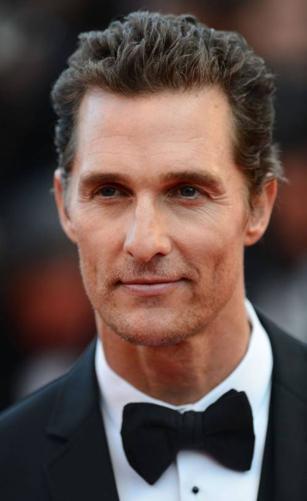
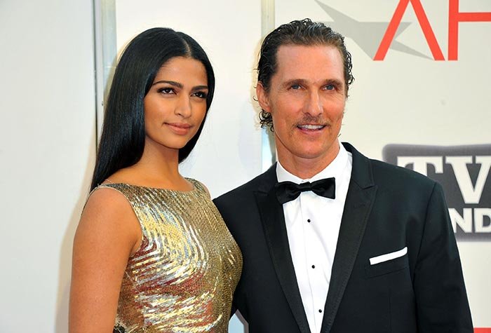

Біографія
Меттью Мак-Конагей народився 4 листопада 1969 року в Техасі й був молодшим сином у родині. Виріс в місті Лонгв'ю.
Закінчив школу в 1988 році й вступив до Університету Техасу в Остіні з явним наміром стати адвокатом. Перед одним зі своїх останніх іспитів, він був натхненний книгою Ога Мандіно «Найкращий продавець у світі» і твердо вирішив поміняти спеціалізацію з юриспруденції на кінематограф. Перша відома роль прийшла до нього в 1995 році , коли він знявся разом з Дрю Беррімор в драмі Герберта Росса Хлопці побоку.
Особисте життя
Одружений з бразильською моделлю Камілою Алвес. У них троє дітей: сини — Леві і Лівінгстон та дочка — Віда. У серпні 2019 року Меттью Мак-Конагей став одним із співвласників футбольного клубу «Остін», який почне виступати в Головній лізі футболу (MLS) з 2021 року, коли також відкриється і стадіон «Остіна» на 20,5 тисячі глядачів. Разом з актором частку у франшизі придбав американський бізнесмен Браян Шеффілд.
Політичні амбіції
У листопаді 2020 року в інтерв'ю Г'ю Г'юїтту (WBRC) Мак-Конагей на запитання про можливу політичну кар'єру заявив, що наразі політика здається йому «безнадійною справою», проте рішення балотуватися, наприклад на посаду губернатора Техасу, залежить не від нього, а від думки жителів штату. Під час подкасту The Balanced Voice 10 березня 2021 року актор заявив, що «серйозно подумає» про висування своєї кандидатури на чергових виборах губернатора, запланованих у 2022 році. Мак-Конагей, який народився в Техасі, під час розмови розповів про себе як про батька та викладача Техаського університету. Натомість 29 листопада він повідомив, що передумав йти в політику: за словами актора, наразі він обирає шлях інвестування, а не політичне лідерство.
Цікаві факти
- Подорожував по Сполучених Штатах Америки протягом місяця у власному трейлері Airsteam під час рекламної кампанії фільму Сахара (2005).
- Журнал People в 2005 році визнав його найсексуальнішим чоловіком зі всіх, що нині живуть.
- Був одним з претендентів на роль Фредді Крюгера в рімейку 2010 року[7]. Однак, з невідомих причин, кандидатура Мак-Конагей була відкинута і роль головного лиходія з вулиці В'язів дісталася Джекі Гейлі.